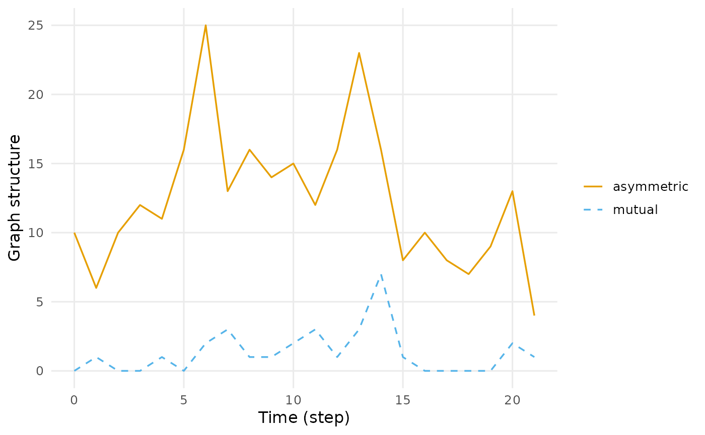

Graph properties measured on each time bin, returned as a time series. This is where a temporal network earns its keep: a single density for the whole course tells you nothing about a group that was dense in week two and silent in week five.
Usage
metrics(
dn,
measure = "density",
sessions = c("bounded", "collapse", "separate"),
sample = NULL,
start = NULL,
end = NULL,
step = NULL,
window = NULL,
plot = FALSE
)Arguments
- dn
A temporal network from
dynet().- measure
One or more of
"density","edges","active_nodes","isolates","transitivity","reciprocity","components","components_strong","largest_component","mean_distance","diameter","mutual","asymmetric","null","assortativity","centralization_degree","centralization_betweenness","centralization_closeness","triads","connectedness","efficiency","hierarchy","lubness"."triads"expands to the sixteen triad classes; the last four are Krackhardt's indices of hierarchy. Lightweight structural summaries are"degree_mean","degree_variance","degree_min","degree_max","mean_degree","indegree_1_5","outdegree_1_5","triangles","concurrent_nodes","concurrent_share","in_2stars","out_2stars", and"two_paths". Exact window-integrated quantities are"temporal_density","observed_pair_density","onset_intensity", and"observed_pair_onset_intensity".- sessions
How to treat sessions, as in
dyn_centrality().- sample
Deprecated.
"instant"is equivalent towindow = 0;"window"uses the current positive/default window.- start, end
First and last time at which to measure. Default to the observed range. A network built from dates may be addressed with dates.
- step
How often to measure. Defaults to the interval the network was built with.
- window
How much time each measurement covers. Defaults to
step, which tiles the period into disjoint bins. A larger value slides an overlapping window;0samples the network at each point in time."all"measures the whole observed period as one window, closed on the right so an event at the final instant is inside it; it cannot be combined withstep, and undersessions = "separate"or discontinuous observation it gives one window per session or observed component.- plot
Whether to draw the result as well as return it. Drawing is a side effect in the manner of
graphics::hist(): the verb still returns its tidy table, invisibly when it has drawn, soplot = TRUEsaves the wrappingplot()call without changing what comes back. Useplot()on the result when the figure needs arguments of its own.
Value
A dynet_metric at graph level: one row per time point and
measure, with columns session (when present), time, measure and
value.
Details
"density" counts the any-time union of realised edges against eligible
possible edges in each bin. The four temporal selectors instead integrate
exact state over positive observed time inside every reporting window.
"temporal_density" is binary occupied pair-time divided by all eligible
nonloop ordered-pair time (directed) or dyad time (undirected).
"observed_pair_density" uses the same numerator but restricts opportunity
to pairs having endpoint-valid evidence anywhere in the complete stored
history. That cohort is not reset by reporting windows or observation gaps.
summary() reports the first quantity over the pooled full history.
If Y[r](t) is exact simultaneous endpoint eligibility, E[r](t) is
binary edge presence, and H is the ever-observed pair set, the exposure
ledgers are R = sum(r) integral(Y[r](t) dt),
O = sum(r) integral(Y[r](t) E[r](t) dt), and
R_H = sum(r in H) integral(Y[r](t) dt). The two occupancies are O/R
and O/R_H and lie in [0, 1]. Loops, weights, duplicates, and censor
flags cannot multiply occupancy.
"onset_intensity" and "observed_pair_onset_intensity" divide the
number of known raw spell starts by R and R_H. Each nonloop raw row,
including a point contact, contributes once when its start is observed,
not onset-censored, and has exactly eligible endpoints. Termini are not
events; overlaps and duplicates remain distinct onsets. Intensities are
nonnegative, unbounded, and measured in inverse network time. A zero
denominator gives NA for every temporal selector, even when a point event
exists. A positive denominator with a zero numerator gives zero. Therefore
window = 0 makes all four temporal selectors undefined while snapshot
measures retain their exact point-state meanings.
step and window are separate on purpose: step is how often you look,
window is how much of the timeline each look takes in. A seven-day window
stepped one day at a time smooths a noisy series without giving up daily
resolution. They match time.interval and aggregate.dur in
tsna::tSnaStats().
When vertex activity was declared in dynet(), every measure is computed
on the endpoint-induced eligible vertex set for the window. Positive
windows independently use the any-time vertex and edge unions before
induction; window = 0 evaluates the exact state. Density and census
opportunities, components, isolate counts, largest-component shares, and
Freeman denominators therefore use eligible rather than fixed order.
Krackhardt's four indices – "connectedness", "efficiency",
"hierarchy" and "lubness" – describe how far a directed network
departs from a pure out-tree. "hierarchy" and "lubness" are undefined
on some graphs (no connected pair, no component of three) and report NaN
rather than a number that would mislead.
Triad census cost grows with the cube of the vertex count. On a network of a few hundred vertices it is the slowest measure here by a wide margin.
The lightweight structural selectors use the binary, loop-free induced
snapshot. Directed total degree is in-degree plus out-degree;
"degree_variance" is the sample variance across eligible vertices.
"mean_degree" is the mean out-degree for a directed graph (identically,
the mean in-degree) and the ordinary mean degree for an undirected graph;
this matches ERGM's meandeg statistic. "indegree_1_5" and
"outdegree_1_5" sum the corresponding vertex degrees raised to 1.5.
Directed "triangles" is the sum of cyclic and transitive triples, while
an undirected triangle is counted once.
A concurrent vertex has at least two distinct neighbours, so a reciprocal
dyad still supplies only one neighbour. "in_2stars" and "out_2stars"
sum choose(degree, 2) over directed in- and out-degrees. Directed
"two_paths" counts ordered i -> j -> k paths with i != k;
undirected two-paths count each unordered wedge once. Empty eligible
snapshots return zero for all selectors.
References
Freeman, L. C. (1979). Centrality in social networks: conceptual clarification. Social Networks, 1, 215-239. doi:10.1016/0378-8733(78)90021-7
Butts, C. T., Leslie-Cook, A., Krivitsky, P. N., & Bender-deMoll, S. (2024). networkDynamic: Dynamic Extensions for Network Objects, version 0.11.5. doi:10.32614/CRAN.package.networkDynamic
Holme, P., & Saramaki, J. (2012). Temporal networks. Physics Reports, 519(3), 97-125. doi:10.1016/j.physrep.2012.03.001
Latapy, M., Viard, T., & Magnien, C. (2018). Stream graphs and link streams for the modeling of interactions over time. Social Network Analysis and Mining, 8, 61. doi:10.1007/s13278-018-0537-7
Andersen, P. K., & Gill, R. D. (1982). Cox's regression model for counting processes: a large sample study. Annals of Statistics, 10, 1100-1120. doi:10.1214/aos/1176345976
Krackhardt, D. (1994). Graph theoretical dimensions of informal organizations. In Computational Organization Theory (pp. 89-111). Lawrence Erlbaum.
Examples
dn <- dynet(school_contacts)
metrics(dn, measure = "density")
#> # Density (graph-level)
#> # 22 time points, 1 per bin | time in step
#> time measure value
#> 0 density 0.05494505
#> 1 density 0.04395604
#> 2 density 0.05494505
#> 3 density 0.06593407
#> 4 density 0.07142857
#> 5 density 0.08791209
#> 6 density 0.15934066
#> 7 density 0.10439560
#> 8 density 0.09890110
#> 9 density 0.08791209
#> 10 density 0.10439560
#> 11 density 0.09890110
#> # 10 more rows. summary() aggregates them; plot() draws them.
metrics(dn, measure = c("density", "reciprocity", "transitivity"))
#> # Graph structure (graph-level)
#> # 22 time points, 1 per bin | time in step
#> # measures: density, reciprocity, transitivity
#> time measure value
#> 0 density 0.05494505
#> 0 reciprocity 0.00000000
#> 0 transitivity 0.00000000
#> 1 density 0.04395604
#> 1 reciprocity 0.25000000
#> 1 transitivity 0.00000000
#> 2 density 0.05494505
#> 2 reciprocity 0.00000000
#> 2 transitivity 0.00000000
#> 3 density 0.06593407
#> 3 reciprocity 0.00000000
#> 3 transitivity 0.33333333
#> # 54 more rows. summary() aggregates them; plot() draws them.
metrics(dn, measure = "density", step = 1, window = 3)
#> # Density (graph-level)
#> # 22 time points, step 1, window 3 (rolling) | time in step
#> time measure value
#> 0 density 0.1208791
#> 1 density 0.1263736
#> 2 density 0.1538462
#> 3 density 0.1538462
#> 4 density 0.2252747
#> 5 density 0.2527473
#> 6 density 0.2582418
#> 7 density 0.2087912
#> 8 density 0.1923077
#> 9 density 0.2087912
#> 10 density 0.2087912
#> 11 density 0.2582418
#> # 10 more rows. summary() aggregates them; plot() draws them.
plot(metrics(dn, measure = c("mutual", "asymmetric")))
